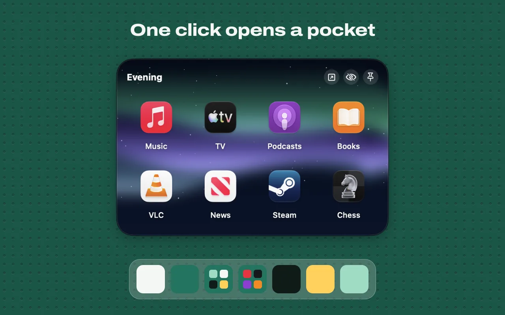
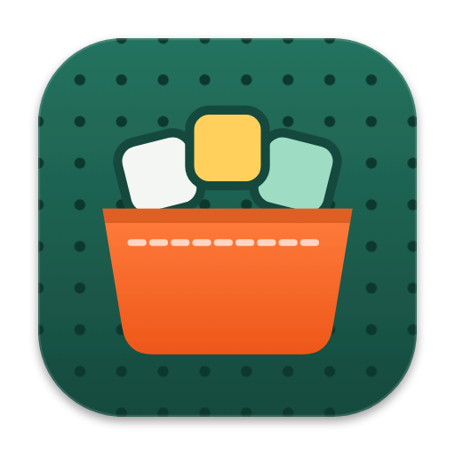

Pocketwerk in action

One Dock icon, a whole group
Put the apps, files, folders and links you use together into a pocket. Give it a Dock icon. Click once to open it, click again to close it.
- Opens where you click
- The popup appears right above the pocket's Dock icon. Show it as a grid, a list or tiles; it adapts to what's inside and pages through the rest.
- Apps, files, folders, links
- Folders open inside the popup. Press Space for Quick Look. Drag items in, drag them out to wherever you need them.
- The whole group at once
- Open All, Hide All or Quit All for a pocket. ⌥-click quits a single app, ⌘-click picks several to open together.
- Pockets that fill themselves
- Smart pockets show your Most Used, Recently Opened and Running Apps.
Try it: an example pocket.
- EditorApp
- BrowserApp
- TerminalApp
- SketchbookApp
- ProjectFolder
- Brief.pdfFile
- Team wikiLink
- MusicApp
- CalendarApp
Click an item, use the arrow keys, or click the pocket's Dock icon.
Example pocket, drawn for this page. Keys: arrows, Return, Space, type to search, ⌘-click, ⌥-click.
Make every pocket look its own way
The Design Studio styles each popup with Liquid Glass, colors, gradients, photos, your blurred desktop picture, textures or animated backgrounds that react to the pointer. Set borders, fonts and corner radius. Start from dozens of built-in themes and presets, then save your own.
An icon to match
The pocket's Dock icon can show a mini grid of the apps inside, a fanned stack, a folder shape, an icon from the SF Symbol packs, an emoji, a word or your own image.
- Mini grid
- Stack
- Folder
- Symbol
- Emoji
- Text
- Image
A different Dock for every kind of work
Save the whole macOS Dock as a profile. Switch with a hotkey, from the menu bar, the command line or a URL. Pocketwerk can quit and launch apps as it switches, and custom spacers keep long Docks readable.
Example profiles and hotkeys. Yours are whatever you save.
- Hotkey
- Menu bar
- Command line
- URL
Fast from the keyboard
- ⌘123456789Jump to a pocket
- ← →ReturnMove and open
- SpaceQuick Look
- a b cType to search the pocket
- Swipe or scroll to the next pocket
And the rest of the toolbox
- Global hotkeys for every pocket and every profile. No Accessibility permission needed.
- Menu bar mode, if you'd rather keep Pocketwerk out of the Dock.
- Launch at login.
- English and German.
Coming in 1.1
An on-device assistant edits a pocket from a plain sentence, with undo. It uses Apple Intelligence on supported Macs with macOS 26.
It stays on your Mac
There is no account, no tracking and no analytics. Your pockets live in one JSON file on your Mac.
Pocketwerk goes online for two things only: a daily update check and the small icons (favicons) of your links. This website sets no cookies either.
Install Pocketwerk
macOS 26 Tahoe or later. Apple Silicon and Intel.
-
Get the app
Download the DMG from GitHub Releases and drag Pocketwerk into Applications. Or install it with Homebrew.
Download for Macbrew install --cask digitaliq/tap/pocketwerk -
Open it once
Pocketwerk isn't notarized by Apple, so the first launch is blocked. Close the message.
-
Allow it in System Settings
Open System Settings, go to Privacy & Security, scroll down and click "Open Anyway" next to Pocketwerk. Confirm, and from then on it opens like any other app.
Privacy & Security, illustrated.

Questions
Is Pocketwerk really free?
Yes. It's free and open source under the MIT license. There's no account and nothing to buy.
Why does macOS block the first launch?
Pocketwerk isn't notarized by Apple. macOS stops the first launch of apps like that. Click "Open Anyway" once in System Settings > Privacy & Security and it opens normally from then on.
How is a pocket different from a folder in the Dock?
A Dock folder shows the files inside one Finder folder. A pocket mixes apps, files, folders and links, has its own Dock icon and look, and can open, hide or quit all its apps at once.
Does Pocketwerk need the Accessibility permission?
Not for its hotkeys. Global hotkeys for pockets and profiles work without it.
What leaves my Mac?
A daily update check and requests for your links' favicons. Nothing else. Your pockets are stored in one JSON file on your Mac.
Which Macs does it run on?
Macs with macOS 26 Tahoe or later, both Apple Silicon and Intel.
Which languages does it speak?
English and German.
Where is the source code?
The full source is on GitHub at github.com/DigitalIQ/pocketwerk.